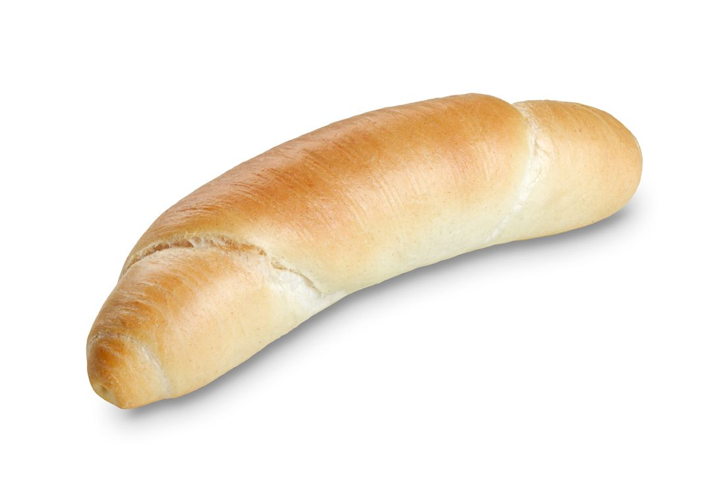
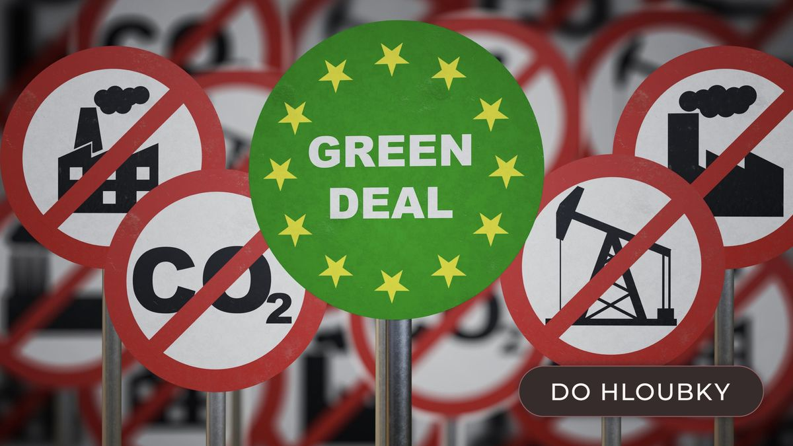

Rohlíková garance seniora - stát doplatí, když rohlík překročí 5 Kč.
Zvýšíme důchody tak, aby si každý senior mohl dopřát rohlík, kávu, a alespoň jeden rozumný rozmar týdně (např. šachy, výlet, slevy na utopence).
Podporujeme zodpovědné, radostné a společenské "mikro-gamblení" - hazard není hřích, hazard je přece komunitní aktivita!

Nejsme proti přírodě, jen proti zelené panice. Podporujeme ekologii, ale nechceme absurdní termíny, kdy má být vše elektrické, nebo podporovat daně z dýchání.
Naše sliby jsou 100% upřímné. „Možná to uděláme.“, „Možná ne.“, „Když to vyjde, tak to vyjde.“, velmi realistické a upřímné, že?